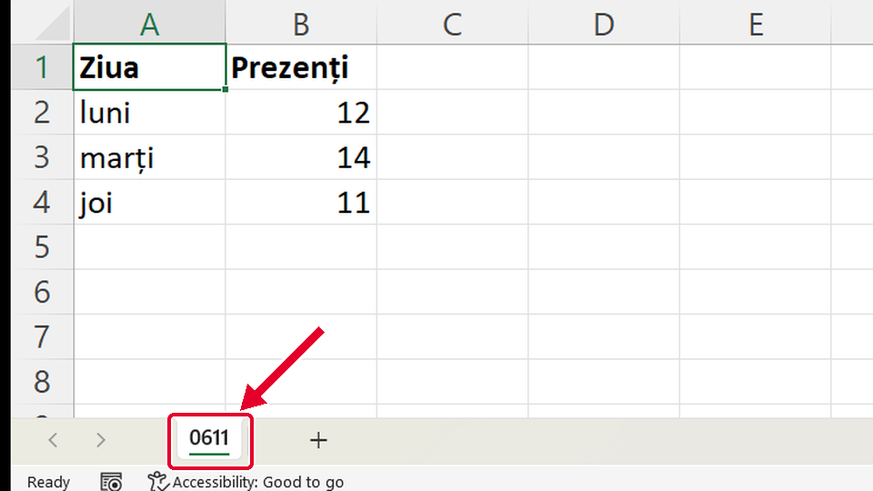
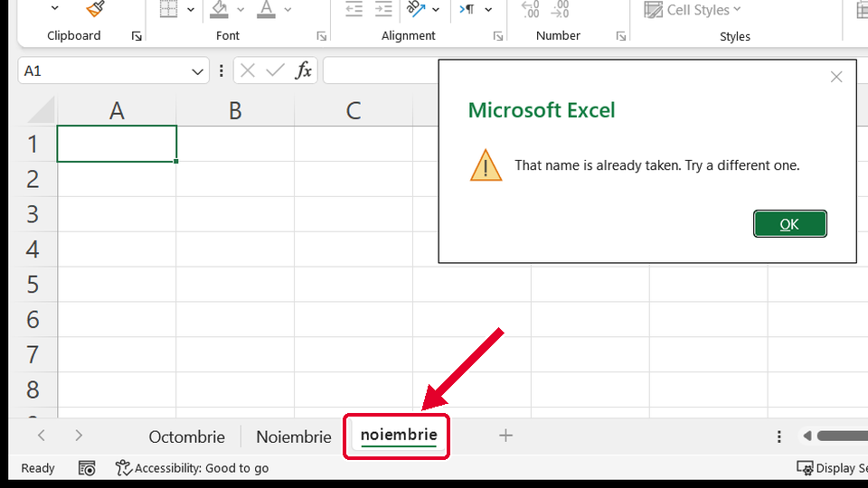
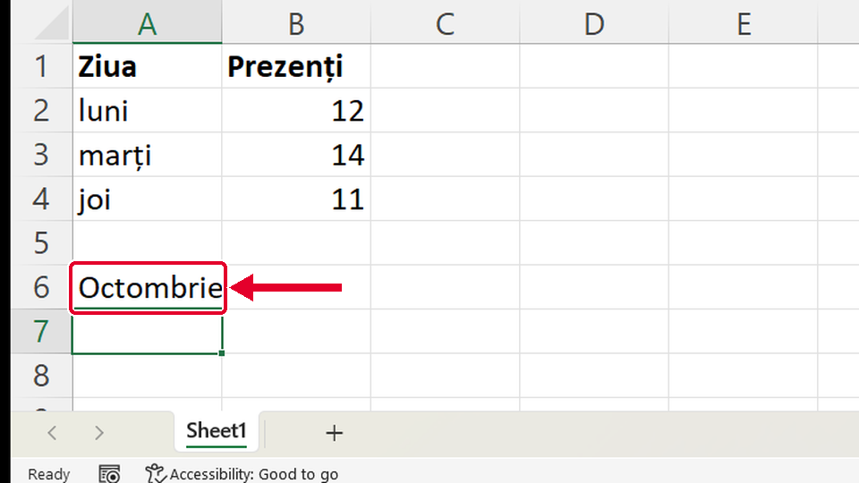

Început
Redenumești o foaie
Taste: Spațiu = pauză / continuă · ← și → = pasul anterior / următor · cu Tab ajungi la „Rulează singur”; acolo Spațiu îl pornește sau îl oprește. Poți apăsa și pe film.

Legat de asta
Se deschid într-o filă nouă, ca să nu pierzi filmul de aici.
- Același gestLățimea potrivită automat ↗
Tot un dublu-clic, pe linia dintre literele coloanelor: Excel potrivește singur lățimea după cel mai lung text.
- ApoiCopiezi un tabel cu Ctrl+C și Ctrl+V ↗
Copiezi un tabel în alt loc: îl selectezi trăgând, apoi Ctrl+C, Copiere (Copy), și Ctrl+V, Lipire (Paste).
Dacă nu-ți iese
Alege ce vezi pe ecran.
Ai scris 06/11, dar pe filă scrie 0611: bara n-a apărut deloc.

De ce: Numele unei foi nu poate conține caracterele / \ ? * : [ ]. Excel nu le scrie pe filă, așa că din 06/11 rămâne 0611.
Ce faci:
- Dai dublu-clic pe fila 0611.
- Scrii data cu liniuță: 06-11.
- Apeși Enter.
Taste: Enter
După Enter apare fereastra „That name is already taken. Try a different one.”: Excel nu primește numele noiembrie.

De ce: Există deja o foaie Noiembrie. Pentru Excel, noiembrie și Noiembrie sunt același nume, iar două foi nu pot avea același nume.
Ce faci:
- Apeși OK: numele scris rămâne pe filă, selectat.
- Scrii numele cerut, Septembrie, și apeși Enter.
Taste: Enter
Foaia se numește tot Sheet1, iar Octombrie a apărut scris în celula A6.

De ce: Ai dat un singur clic pe filă. Un clic doar alege foaia; ce scrii apoi merge în celula aleasă.
Ce faci:
- Apeși Ctrl+Z ca să golești celula.
- Dai două clicuri repezi (dublu-clic) pe fila Sheet1: numele se selectează.
- Scrii Octombrie și apeși Enter.
Taste: Ctrl+Z · Enter